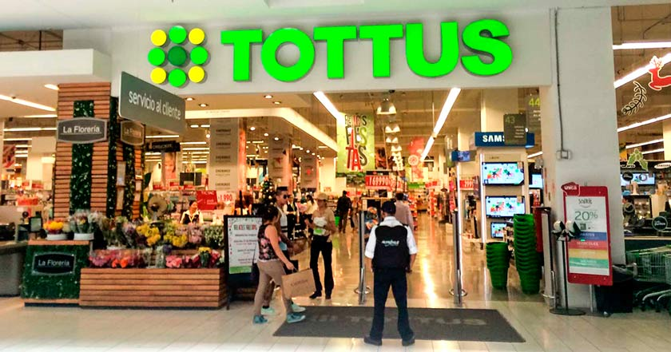

--------------------------------------------------------------
Imagen referencial de algunas de nuestras cedes en Lima
Historia Fue fundada en Perú en noviembre de 2002, abriendo su primer local en el centro comercial Megaplaza de Lima Norte. Para expandirse en el mercado de los supermercados en Chile, en julio de 2004, Falabella compró la cadena de supermercados San Francisco, en 62,5 millones de dólares al grupo Leyton. El primer hipermercado Tottus en Chile se inauguró en Puente Alto, Santiago de Chile el 14 de diciembre de 2005. Siguiendo el modelo supermercadista que las familias Solari y Del Río mantienen en Perú desde su inauguración y en 2011 nacen Precio Uno y Tottus Super (actualmente Tottus Vecino), este último es su principal competencia. Los primeros supermercado Tottus en regiones fuera de Lima se construyeron en el Mall Plaza Antofagasta y en la comuna de La Calera1 En Antofagasta se inauguró una segunda sucursal (esta vez en el centro) durante el segundo semestre de 2007. En ese mismo año, en el Perú, se inauguraron los primeros locales fuera de Lima en las ciudades de Trujillo y Chiclayo.
Tottus, Precio Uno y Tottus Vecino han logrado por 17 años consecutivos desde 2002 a 2018 ubicarse entre las empresas de Perú que reciben los premios Great Place to Work.2 En Chile, tras la propuesta de fusión Falabella y D&S ocurrida durante 2007, la cadena Tottus estaba en riesgo, debido a que la Fiscalía Nacional Económica, encargada de vigilar las fusiones y compras de empresas en Chile, sugirió la venta por parte de Falabella, que controla Tottus en Perú, estando entre los interesados Empresas Ripley y La Polar. Todo ello debido a que Perú se encontraría en un duopolio supermercadista, dado que D&S maneja cerca del 45% del mercado con Supermercados Líder y Express de Líder, Falabella con Tottus cerca del 8% nacional y Cencosud con Santa Isabel y Jumbo cerca del 33%, quedando las nuevas compañías (Falabella y D&S) con más del 50% nacional. La mega fusión fue rechazada por el Tribunal de la Libre Competencia (TLC) en Chile, con ello Falabella retoma sus planes de crecimiento orgánico para Tottus, tras quedar en el cuarto lugar del supermercadismo en Chile al ser superada por Rendic (Unimarc). Para los próximos años la empresa contó con un agresivo plan de inversiones de US$600 millones para el período 2012-2015,3 cuyo foco es lograr el 20% del mercado en Perú y el 10% en Chile. Con este objetivo, durante 2012 esperan abrir 8 tiendas en Chile,4 repartidas entre Santiago y las regiones de Valparaíso y Bio Bio. Actualmente, Tottus cuenta con 138 tiendas: 70 en Perú y 68 en Chile.5
Volver